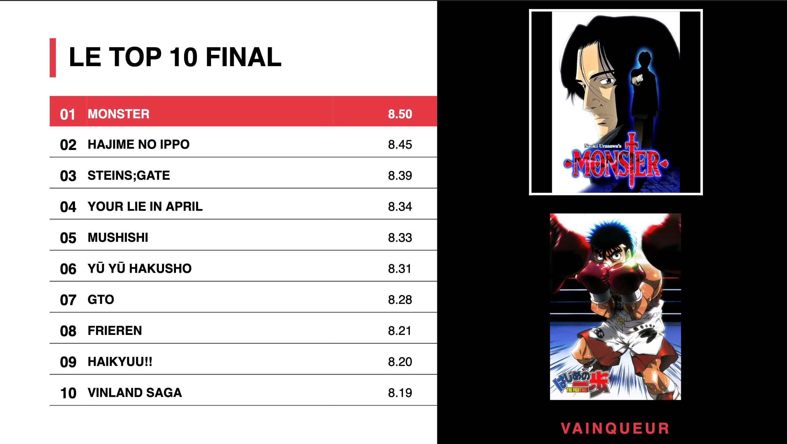

← Retour aux projets
← Voir les autres projets
⚙️ Score pondéré · Recommandation
Système de notation & de recommandation (animés / mangas)

Le problème
Une simple note moyenne est trompeuse. Deux œuvres notées 8/10 n'offrent pas la même expérience : l'une peut être courte et régulière, l'autre longue avec de gros passages à vide (les fameux « fillers »). Comment produire un classement réellement fidèle à la qualité perçue ?
Ma démarche
À partir d'un dataset d'une centaine d'œuvres, j'ai récupéré, nettoyé et exploré les données (EDA), puis conçu un score sur-mesure :
- Pondération de plusieurs critères : longueur de l'œuvre, régularité des notes entre épisodes, détection des épisodes « flop ».
- Ajustement itératif des paramètres de pondération pour obtenir un classement plus juste que la moyenne brute.
- Mise en place d'un système de recommandation orientant l'utilisateur selon ses goûts.
Le résultat
~100œuvres analysées
Multicritères de notation pondérés
+moteur de recommandation par affinités
Le projet aboutit à un classement repondéré, plus représentatif de la qualité réelle des œuvres, et à un système capable de conseiller un utilisateur en fonction de ses préférences.